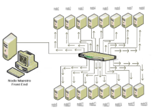
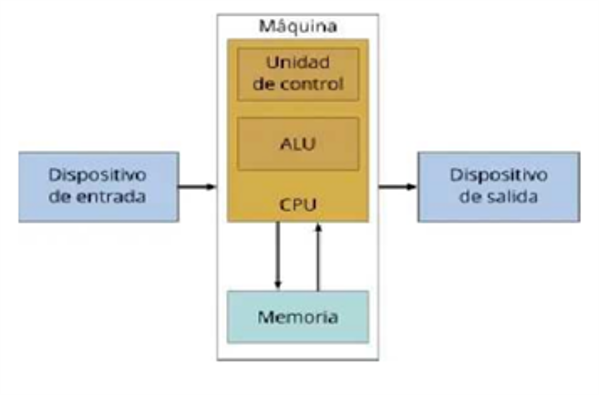
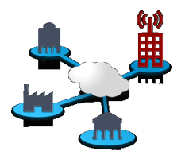

La computación paralela es una forma de cómputo en la que muchas instrucciones se ejecutan simultáneamente, operando sobre el principio de que problemas grandes, a menudo se pueden dividir en unos más pequeños, que luego son resueltos simultáneamente
(en paralelo). Hay varias formas diferentes de computación paralela.
Las computadoras paralelas pueden clasificarse según el nivel de paralelismo que admite su hardware: equipos con procesadores multinúcleo y multi-procesador que tienen múltiples elementos de procesamiento dentro de una sola máquina
y los clústeres, MPPS y grids que utilizan varios equipos para trabajar en la misma tarea. Muchas veces, para acelerar las tareas específicas, se utilizan arquitecturas especializadas de computación en paralelo junto a procesadores tradicionales.

Aspectos para considerar:
Paralelismo a nivel de bit
Desde el advenimiento de la integración a gran escala (VLSI) como tecnología de fabricación de chips de computadora en la década de 1970 hasta alrededor de 1986, la aceleración en la arquitectura de computadores se lograba en gran medida
duplicando el tamaño de la palabra en la computadora, la cantidad de información que el procesador puede manejar por ciclo.
Paralelismo a nivel de instrucion
Un programa de ordenador es, en esencia, una secuencia de instrucciones ejecutadas por un procesador. Estas instrucciones pueden reordenarse y combinarse en grupos que luego son ejecutadas en paralelo sin cambiar el resultado del programa.
Esto se conoce como paralelismo a nivel de instrucción.
Paralelismo de datos
El paralelismo de datos es el paralelismo inherente en programas con ciclos, que se centra en la distribución de los datos entre los diferentes nodos computacionales que deben tratarse en paralelo. La paralelización de ciclos conduce
a menudo a secuencias similares de operaciones (no necesariamente idénticas) o funciones que se realizan en los elementos de una gran estructura de datos. Muchas de las aplicaciones científicas y de ingeniería muestran paralelismo de datos.
Paralelismo de tareas
El paralelismo de tareas es la característica de un programa paralelo en la que cálculos completamente diferentes se pueden realizar en cualquier conjunto igual o diferente de datos. Esto contrasta con el paralelismo de datos, donde se
realiza el mismo cálculo en distintos o mismos grupos de datos. El paralelismo de tareas por lo general no escala con el tamaño de un problema.
Las computadoras paralelas pueden clasificarse según el nivel de paralelismo que admite su hardware: equipos con procesadores multinúcleoy multi-procesador que tienen múltiples elementos de procesamiento dentro de una sola máquina y los clústeres, MPPS y grids que utilizan varios equipos para trabajar en la misma tarea. Muchas veces, para acelerar tareas específicas, se utilizan arquitecturas especializadas de computación en paralelo junto a procesadores tradicionales.
Dentro de esta clasificación, se encuentra a las computadoras SISD (Single-Instruction Stream, Single-Data, Stream/ Flujo único de instrucciones, flujo único de datos)
Las computadoras secuenciales se basan en el modelo introducido por John Von Neumann la cual consiste en:
En estos sistemas, los valores de las salidas, en un momento dado, no dependen exclusivamente de los valores de las entradas en dicho momento, sino también de los valores anteriores. El sistema más simple que existe se denomina Biestable

Una memoria principal se compone de un conjunto de celdas básicas dotadas de una determinada organización. Cada celda soporta un bit de información. Los bits se agrupan en unidades direccionables denominadas palabras. La longitud de palabra la determina
el número de bits que la componen y constituye la resolución de la memoria (mínima cantidad de información direccionable). La longitud de palabra suele oscilar desde 8 bits (byte) hasta 64 bits.
Cada celda básica es un dispositivo físico con dos estados estables (o semi-estables) con capacidad para cambiar el estado (escritura) y determinar su valor (lectura). Aunque en los primeros computadores se utilizaron los materiales
magnéticos como soporte de las celdas de memoria principal (memorias de ferritas, de película delgada, etc.) en la actualidad sólo se utilizan los materiales semiconductores.
Dentro de las memorias electrónicas de semiconductor podemos distinguir dos grandes grupos: las estáticas (SRAM: Static Random Access Memory) y las dinámicas (DRAM: Dynamic Random Access Memory).
Las celdas de memoria se disponen en el interior de un chip atendiendo a dos organizaciones principales: la organización por palabras, también denominada 2D, y la organización por bits, también denominada 2 ½ D o 3D.
Un multiprocesador puede verse como un computador paralelo compuesto por varios procesadores interconectados que comparten un mismo sistema de memoria.
Los sistemas multiprocesadores son arquitecturas MIMD con memoria compartida. Tienen un único espacio de direcciones para todos los procesadores y los mecanismos de comunicación se basan en el paso de mensajes desde el punto de vista
del programador.
Dado que los multiprocesadores comparten diferentes módulos de memoria, pudiendo acceder a un mismo módulo varios procesadores, a los multiprocesadores también se les llama sistemas de memoria compartida.
Dependiendo de la forma en que los procesadores comparten la memoria, se clasifican en sistemas multiprocesador UMA, NUMA y COMA.
Multiproceso es tradicionalmente conocido como el uso de múltiples procesos concurrentes en un sistema en lugar de un único proceso en un instante determinado. Como la multitarea que permite a múltiples procesos compartir una única
CPU, múltiples CPUs pueden ser utilizados para ejecutar múltiples hilos dentro de un único proceso.
Multiprocesadores.
El multiproceso para tareas generales es, a menudo, bastante difícil de conseguir debido a que puede haber varios programas manejando datos internos (conocido como estado o contexto) a la vez.
Los programas típicamente se escriben asumiendo que sus datos son incorruptibles. Sin embargo, si otra copia del programa se ejecuta en otro procesador, las dos copias pueden interferir entre sí intentando ambas leer o escribir su
estado al mismo tiempo. Para evitar este problema se usa una variedad de técnicas de programación incluyendo semáforos y otras comprobaciones y bloqueos que permiten a una sola copia del programa cambiar de forma exclusiva ciertos valores.
Uno de los criterios más importantes para la clasificación de las redes es el que tiene en cuenta la situación de la red en la máquina paralela, dando lugar a dos familias de redes: redes estáticas y redes dinámicas. Una red estática es una red cuya topología
queda definida de manera definitiva y estable durante la construcción de la máquina paralela.
La red simplemente une los diversos elementos de acuerdo con una configuración dada. Se utiliza sobre todo en el caso de los multicomputadores para conectar los diversos procesadores que posee la máquina. Por la red sólo circulan
los mensajes entre procesadores, por lo que se dice que la red presenta un acoplamiento débil. En general, en las redes estáticas se exige poca carga a la red.
Una red dinámica es una red cuya topología puede variar durante el curso de la ejecución de un programa paralelo o entre dos ejecuciones de programas. La red está constituida por elementos materiales específicos, llamados commutadores
o switches.

Los sistemas de memoria distribuida o multicomputadoras pueden ser de dos tipos básicos. El primer de ellos consta de un único computador con múltiples CPUs comunicadas por un bus de datos mientras que en el segundo se utilizan múltiples computadores,
cada uno con su propio procesador, enlazados por una red de interconexión más o menos rápida.
Sobre los sistemas de multicomputadoras de memoria distribuida, se simula memorias compartidas. Se usan los mecanismos de comunicación y sincronización de sistemas multiprocesadores.
Aspectos:
Las redes estáticas emplean enlaces directos fijos entre los nodos. Estos enlaces, una vez fabricado el sistema son difíciles de cambiar, por lo que la escalabilidad de estas topologías es baja. Las redes estáticas pueden utilizarse con eficiencia en
los sistemas en que pueden predecirse el tipo de tráfico de comunicaciones entre sus procesadores.
Clases de redes de interconexión:
Por numerosos motivos, el procesamiento distribuido se ha convertido en un área de gran importancia e interés dentro de la Ciencia de la Computación, produciendo profundas transformaciones en las líneas de I/D.
Interesa realizar investigación en la especificación, transformación, optimización y evaluación de algoritmos distribuidos y paralelos. Esto incluye el diseño y desarrollo de sistemas paralelos, la transformación de algoritmos secuenciales
en paralelos, y las métricas de evaluación de performance sobre distintas plataformas de soporte (hardware y software). Más allá de las mejoras constantes en las arquitecturas físicas de soporte, uno de los mayores desafíos se centra en cómo
aprovechar al máximo la potencia de estas.
Interesa realizar investigación en la especificación, transformación, optimización y evaluación de algoritmos distribuidos y paralelos. Esto incluye el diseño y desarrollo de sistemas paralelos, la transformación de algoritmos secuenciales
en paralelos, y las métricas de evaluación de performance sobre distintas plataformas de soporte (hardware y software). Más allá de las mejoras constantes en las arquitecturas físicas de soporte, uno de los mayores desafíos se centra en cómo
aprovechar al máximo la potencia de estas.
Líneas De Investigación Y Desarrollo: